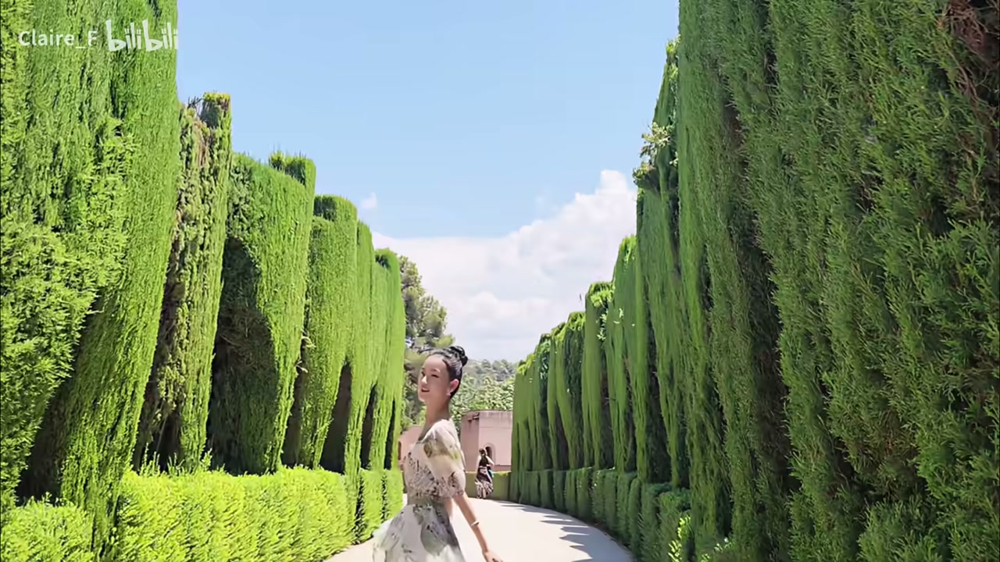
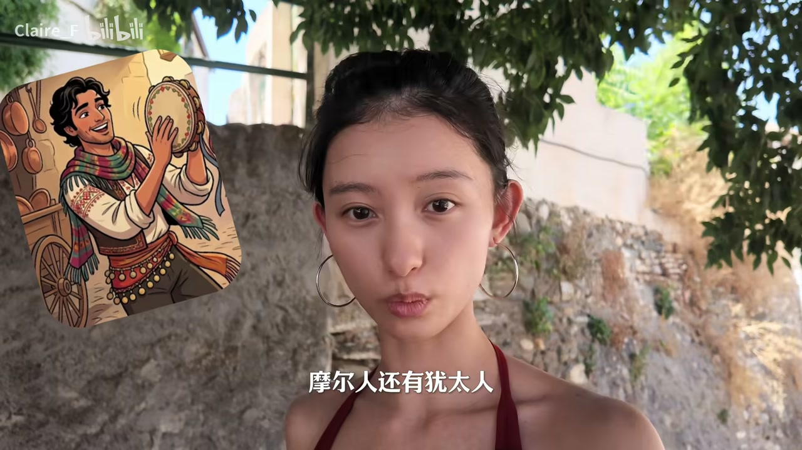
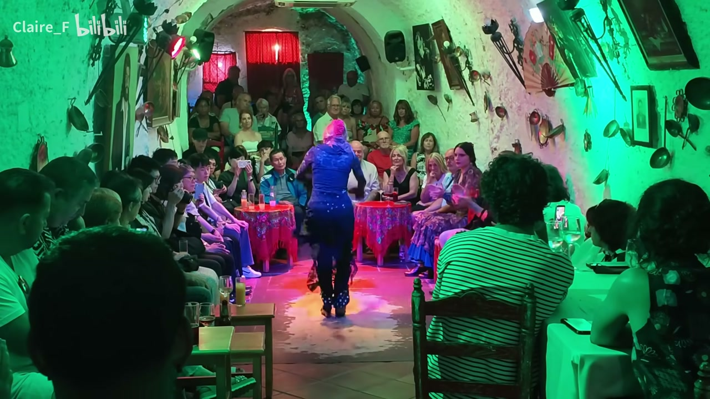
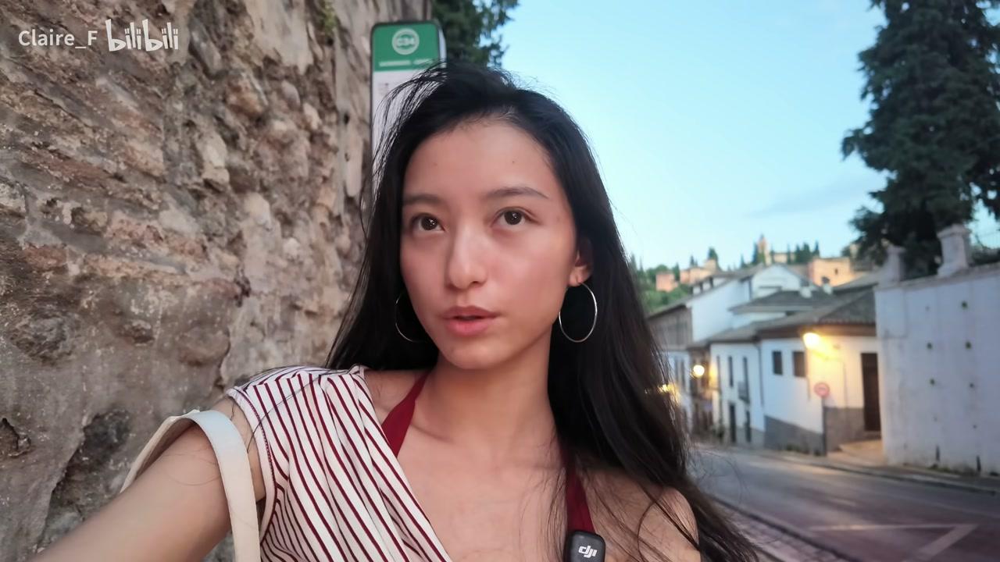
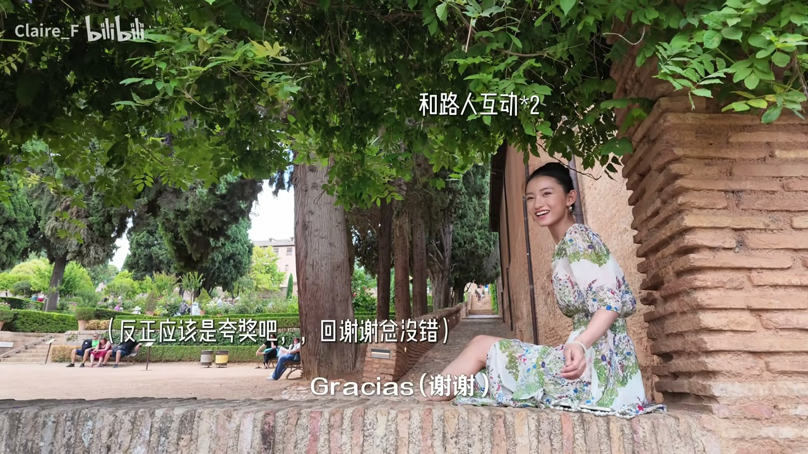

01
中文
这里是伊斯兰文明在欧洲留下的，最后一场近800年的绮丽幻梦。
EN
This is the final, nearly eight-hundred-year dream that Islamic civilization left behind in Europe.
表达提示nearly eight-hundred-year（近800年的）；leave behind in Europe（留在欧洲的）

Scene English · 旅行Vlog · 西班牙 · 格拉纳达
Granada Vlog | Roaming Spain 06
🎧 语音讲解
Opening: The Last Dream of Islamic Civilization
情境博主开场介绍：这里是伊斯兰文明在欧洲留下的最后一场近800年的集设幻梦，也是弗拉门戈的启蒙之地。语域：纪录片旁白，文学性强。
这里是伊斯兰文明在欧洲留下的，最后一场近800年的绮丽幻梦。
This is the final, nearly eight-hundred-year dream that Islamic civilization left behind in Europe.
表达提示nearly eight-hundred-year（近800年的）；leave behind in Europe（留在欧洲的）
对面就是在绝境中孕育出西班牙国粹，弗拉门戈的启蒙之地。
Across the way is the birthplace of flamenco, the treasure of Spain born out of despair.
表达提示the birthplace of（…的发源地）；born out of despair（在绝境中诞生）；the treasure of Spain（西班牙国粹）
欢迎收看我的漫游西班牙系列第六期，格拉纳达。
Welcome to Episode Six of my Roaming Spain series: Granada.
表达提示Episode Six（第六期）；Roaming Spain series（漫游西班牙系列）
最后的幻梦 → the final dream / the last golden age
在绝境中诞生 → born out of despair / born from suffering
The Old Town Parking Mishap
情境博主和妈妈入住古城酒店，网上写着有车位但实际没有，开车进去被当地人提醒不能开车。语域：旅行叙事，窘迫而好笑。
它的预定网上写它有停车位，并且写清楚了说21欧一晚上。
The booking website said the hotel had parking, and it clearly said twenty-one euros a night.
表达提示booking website（预订网站）；twenty-one euros a night（一晚21欧）
有一个非常好心的人就跟我说：你不能在这里开车。
A really kind person told me: you can't drive here.
表达提示a really kind person（一个非常好心的人）；drive here（在这里开车）
真的不要来古城开车，太可怕了，一不小心就走错了。
Seriously, don't drive in the old town — it's terrifying, and one wrong turn and you're lost.
表达提示don't drive in the old town（别在古城开车）；one wrong turn（一不小心走错）
一不小心就走错 → one wrong turn and you're lost / get lost in no time
非常好心的人 → a really kind person / someone very kind-hearted

The White Community: Where Flamenco Was Born
情境走40分钟到格拉纳达圣山上的白色社区，这里是吉普赛人、摩尔人和犹太人在基督教统治下被驱逐上山后居住的地方，也是弗拉门戈的发源地。语域：人文讲述。
我们走了40分钟，来到格拉纳达旁边的圣山上，一整座白色社区。
After a forty-minute walk, we reached an entire white community on the sacred mountain next to Granada.
表达提示a forty-minute walk（走了40分钟）；sacred mountain（圣山）
这些社区是当年的吉普赛人、摩尔人和犹太人，他们在基督教的统治下被边缘化，然后被驱逐到这个山上。
These communities were once Roma, Moors, and Jews — marginalized under Christian rule and driven up onto this mountain.
表达提示marginalized（被边缘化）；driven up onto the mountain（被驱逐上山）
弗拉门戈就是这些被边缘化的群体，在发泄对命运的愤怒，对这种不公的一种抵抗。
Flamenco was the way these marginalized people vented their anger at fate — a resistance to injustice.
表达提示vent anger at fate（发泄对命运的愤怒）；a resistance to injustice（对不公的抵抗）
被边缘化 → marginalized / pushed to the edge of society
发泄愤怒 → vent their anger / pour out their rage

Watching Flamenco: Anger or Passion
情境博主看完弗拉门戈表演后问同伴：你感受到的是愤怒还是热情？同伴说听歌感受是悲伤，看舞蹈感受确实是愤怒。语域：观后对话，简短有张力。
怎么样，你感受到的是愤怒还是热情？
So, what did you feel — anger or passion?
表达提示anger or passion（愤怒还是热情）
我听歌的感受是悲伤，看到他们舞的感受确实是愤怒。
The music felt sad to me, but watching them dance, what I felt was definitely anger.
表达提示the music felt sad（听歌感受是悲伤）；definitely anger（确实是愤怒）
你感受到的是愤怒还是热情。
What you feel — is it anger or is it passion?
表达提示重复强调的设问句式，用于引出思考
感受到 → what did you feel / what came through to you
确实是愤怒 → definitely anger / pure anger

Art: A Survival Skill Born of Despair
情境博主分享两个感触：一是艺术是人在绝境下留给自己的生存技能，二是不要因为没钱就不追求艺术——民间艺术同样直击灵魂。语域：观点讲述，真诚有力。
艺术也是一种在绝境之下，留给人们最后的一种生存技能。
Art is also a last survival skill left to people in the depths of despair.
表达提示a survival skill（生存技能）；in the depths of despair（在绝境之下）
不要因为觉得没有钱就不去追求，这个世界也需要你们这样的人。
Don't give up your pursuit just because you don't have money — the world needs people like you.
表达提示give up your pursuit（放弃追求）；the world needs people like you（世界需要你们这样的人）
需要在绝境下爆发出这些直击人们灵魂的艺术。
There are also those who, in desperation, erupt with art that cuts straight to people's souls.
表达提示erupt with art（爆发出艺术）；cut straight to the soul（直击灵魂）
在绝境下 → in the depths of despair / in dire straits / at rock bottom
直击灵魂 → cut straight to the soul / hit people's hearts
The Cathedral & the Alhambra
情境博主介绍格拉纳达主座教堂建在清真寺原址，伊莎贝拉女王夫妇下葬于此；然后来到阿尔罕布拉宫，一座修在山上的宫廷城市，票极难抢。语域：历史讲解。
这个教堂依旧是建在清真寺的原址上。
This cathedral is still built on the original site of a mosque.
表达提示on the original site of（在…的原址上）；mosque（清真寺）
这里的皇家礼拜堂还下葬着统一了西班牙、资助了哥伦布的那个伊莎贝拉女王。
The royal chapel here entombs Isabella, the queen who unified Spain and funded Columbus.
表达提示royal chapel（皇家礼拜堂）；unify Spain（统一西班牙）；fund Columbus（资助哥伦布）
阿尔罕布拉宫不是一座宫殿，它是一整座修在山上的宫廷城市。
The Alhambra isn't a palace — it's an entire court-city built on a mountain.
表达提示an entire court-city（一整座宫廷城市）；built on a mountain（修在山上）
建在原址 → built on the original site / on the very spot
下葬着 → entombs / is the burial place of

Plaster & Wood: The Art of the Moors
情境博主对比基督教宫殿用黄金大理石，而伊斯兰摩尔人用最朴实的石膏和木头雕刻出华丽图案。语域：艺术评述。
基督教他们的宫殿，都是拿黄金大理石给你打造那种金碧辉煌的感觉。
Christian palaces are built with gold and marble to create that dazzling, golden splendor.
表达提示dazzling splendor（金碧辉煌）；built with gold and marble（用黄金大理石打造）
伊斯兰摩尔人他们的艺术，就是用最朴实无华的石膏和木头，在上面雕刻出特别华丽的图案。
Moorish art, by contrast, carves gorgeous patterns out of the humblest plaster and wood.
表达提示the humblest plaster and wood（最朴实的石膏和木头）；carve gorgeous patterns（雕刻出华丽图案）
这是摩尔人做的最后一场极致奢华的梦。
This was the Moors' last dream of ultimate luxury.
表达提示ultimate luxury（极致奢华）；last dream（最后一场梦）
金碧辉煌 → dazzling splendor / gleaming with gold
朴实无华 → the humblest / unadorned / plain and simple
Meeting a Fellow Traveler
情境博主一个人坐在墙上等妈妈时，一位国人小姐姐觉得她的机位很好，主动过来帮她拍照。博主在视频里感谢她。语域：温暖叙事。
她看到我，她觉得我那个机位很好，她说像一幅画。
She saw me and thought my spot had a great angle — she said it looked like a painting.
表达提示a great angle（机位很好）；look like a painting（像一幅画）
然后就主动过来帮我拿相机拍照。
So she came over on her own and offered to take photos for me.
表达提示on her own（主动）；offer to take photos（主动帮拍照）
如果她能看到我的视频的话，非常非常感谢。
If she ever sees this video, thank you so, so much.
表达提示thank you so much（非常感谢）；语气叠加表强调
主动过来 → came over on her own / took the initiative
像一幅画 → looks like a painting / like a picture
Closing: Book Tickets Months Ahead
情境博主提醒阿尔罕布拉宫最重要的宫殿不能迟到，迟到就进不去；格拉纳达之行到此结束，下期见。语域：实用提醒+道别。
票特别特别难抢，就是提前一两个月抢那种。
Tickets are incredibly hard to get — you have to book one or two months in advance.
表达提示incredibly hard to get（特别难抢）；book in advance（提前预订）
这里最重要的那个宫殿不能迟到的，如果你迟到了应该就进不去了。
You can't be late for the main palace — if you're late, they won't let you in.
表达提示can't be late for（不能迟到）；won't let you in（进不去）
格拉纳达就到这里了，下期见，Ciao。
That's Granada for now — see you next episode. Ciao.
表达提示that's it for now（就到这里）；ciao（意大利语再见）
提前一两个月 → one or two months in advance / book way ahead
进不去 → won't let you in / you'll be turned away
介绍格拉纳达的历史地位
解释弗拉门戈的起源
鼓励没钱也不要放弃艺术
提醒朋友提前订票
介绍艺术形式起源比泛泛夸好看更有信息量；born out of despair 是历史性表达。
tickets hard to get（票难抢）与 palace costs money（宫殿造价）是完全不同的意思，别混。
请求合影的礼貌说法是 Can we take a photo together? / Would you mind a photo?
把问题说具体：是酒店承诺有车位实际没有，而不是古镇本身没停车场。